① 株価ヘッダー — 現在値・騰落率と最終更新時刻です。裏側のデータは 1分間隔のタスクで自動生成され、このページ自体も60秒毎に ブラウザが自動的に再読み込みして最新のスナップショットを表示します（手動更新は不要です）。 取引時間中に更新が止まっている可能性がある場合は「⚠️データの更新が…」という注意書きが 表示されます。
② 🤖AI考察（常時最上部・タブとは独立） — 下の4タブに表示されている集計値 (株価・掲示板の強弱比率・9指標の発火状況・ボラレジーム・PTS/ADR等)だけをもとにAIが 生成した文章です。個別の投稿内容やユーザー名は一切含まれません。
③ タブ「🔥 センチメント概況」 — 灼熱メーター／阿鼻叫喚メーターは掲示板の 投稿内容から算出した「過熱度」「セリングクライマックス度」の合成指標(売買のシグナル ではありません)。ボラ・レジーム帯は現在の値動きの荒さが「平穏〜急変」のどの水準にあるか の目安で、データ蓄積初期は「較正中」と表示されます(異常ではなく閾値を学習している途中)。 PTS・米国ADR(表示される場合のみ)は東証の取引時間外の値動きの参考情報です。シグナル発火 状況(9指標)は投稿の偏り・語彙・投稿量などを統計的にチェックした一覧で、🟢OK=平常範囲内 ／🟠警戒=やや偏りが大きい／🔴発火=閾値超過、を示す記述的なラベルです。
④ タブ「📈 価格・推移」 — 本日の推移(価格推移10分足・板の買い/売り総計60秒 平均・本日のセンチメント推移)を東証立会時間の同じ横軸で並べています。価格推移の見出し下 には本日の高値・安値も表示します。過去14日間の推移(価格・センチメント)、過去24時間の センチメント推移(暦日をまたぐローリング窓)もこのタブにあります。
⑤ タブ「📐 値動きの目安・海外要因」 — 直近の日次終値リターンの標準偏差(SD) から算出した値幅の目安、海外半導体ピア・当日の値動きの型・執行コスト比較といった市場 コンテキスト、日次の「値動き÷執行コスト」倍率の推移を表示します。
⑥ タブ「📊 統計評価」 — 掲示板センチメント5指標と翌1日/3日/5日リターンの 相関係数r・中央値分割の差(pt)・t値のマトリクスです。緑=相関がプラス・赤=マイナス、 太字は|t|≥2程度の目安です。探索的分析であり確定した予測ではありません。
件数・数量系のグラフ(投稿量・板の買い/売り総計等)に統計的な外れ値が自動検出された場合は、 グラフ直下に「⚠️自動検出された外れ値」として注記が表示されます(値そのものは書き換えません)。
本ダッシュボードは研究・エンタメ用途の情報提供であり、投資助言ではありません。
更新時刻: 2026-10-16T13:11:57（データは1分間隔で自動生成され、このページも 60秒毎に自動再読み込みされます）
⚠️ データの更新が約8分前から止まっている可能性があります(通常は1分毎に自動生成)。
👀 累計閲覧数: 9,637
強気・弱気は機械判定（辞書＋軽量モデル）の値です。日単位の向きはLM判定と近く（相関0.8台）、時間単位は粗い点に注意してください。
前回集計(2026-10-16T13:04:00)との比較
10-16 09:08 時点の考察（生成時刻: 2026-10-16T09:08:33）
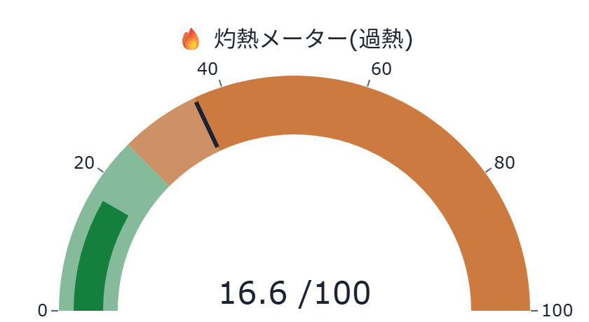
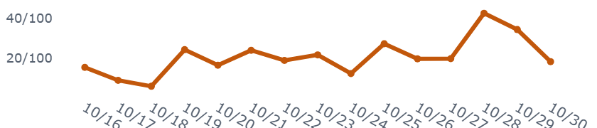
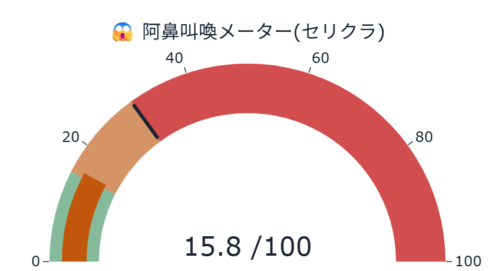
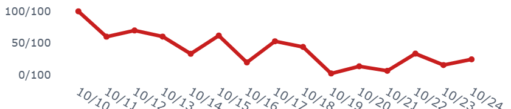
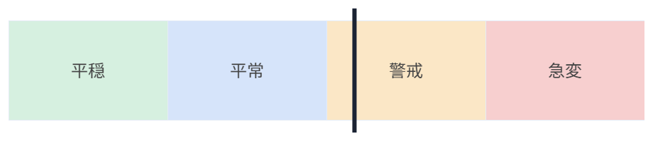
現在レジーム: 較正中 (BVP=0.435)
PTS=東証取引時間外の私設取引システム／ADR=米国預託証券／DEX=分散型取引所(Hyperliquid)の24時間取引・円換算(東証終値比)。翌営業日の値動きの参考情報です(それ自体が売買シグナルではありません)。
※ニュース見出しの要約であり、投資助言ではありません。各見出しから元記事(Google News経由)へ移動できます。
掲示板の投稿を集計した9つの指標が、統計的なしきい値を超えたかどうかを示す一覧です。 「発火」は売買のシグナルではなく、「統計的に見て平常時より偏りが大きい状態」を示す記述的な警告ラベルです。
※研究・エンタメ用途・未検証。売買シグナルではありません。 掲示板は方向よりボラを予測する傾向が文献で報告されています(Antweiler & Frank, 2004)。
本日の高値 13,750円 ／ 安値 12,855円
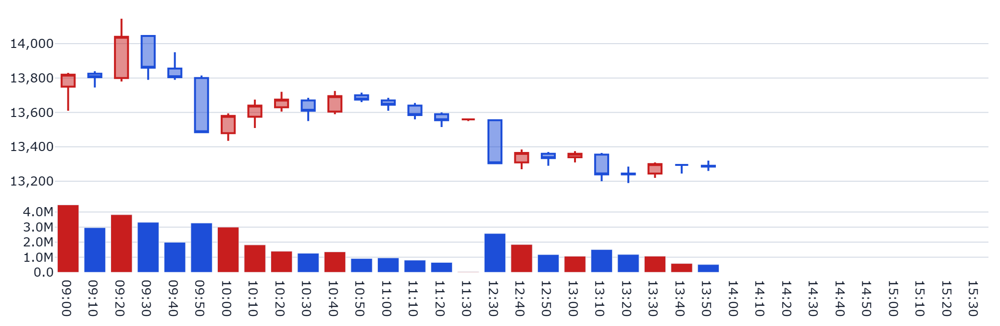
表示10本の気配だけでなく、外側の気配(OVER/UNDER)と成行注文も含めた板全体の数量合計です。 値は直近60秒間の平均。需給の偏りを直接示す指標ではありません。
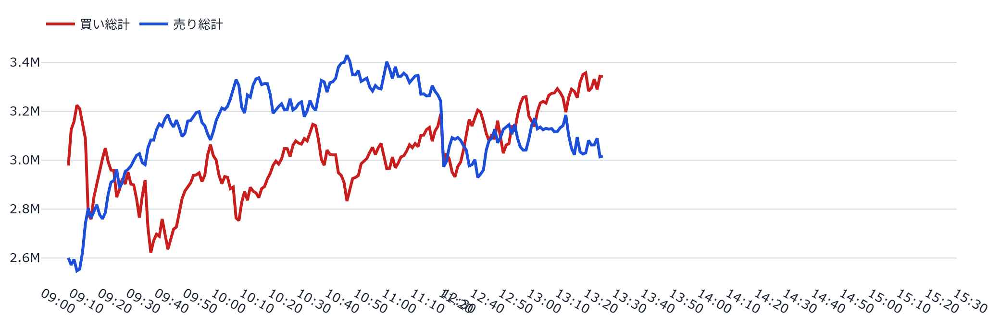
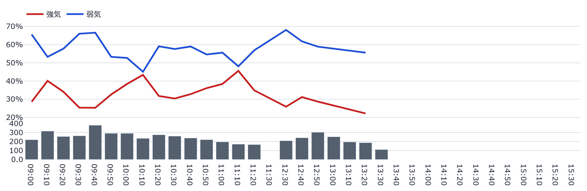
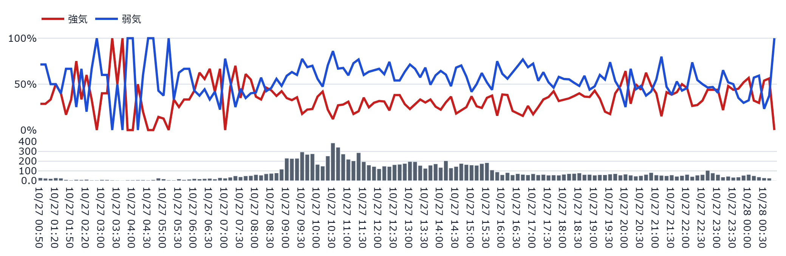
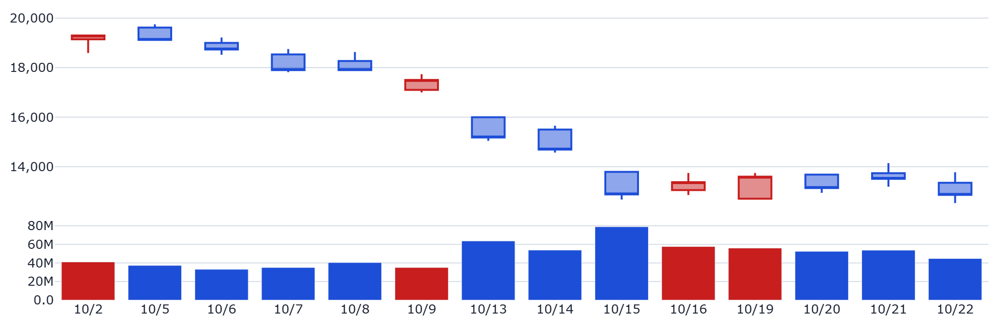
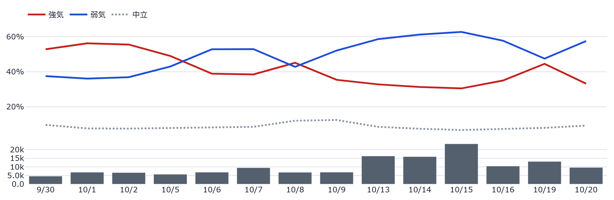
| 値幅の目安 | 上側の水準 | 下側の水準 |
|---|---|---|
| 0.5SD（±2.71%） | 13,593円 | 12,877円 |
| 1.0SD（±5.41%） | 13,952円 | 12,518円 |
| 1.5SD（±8.12%） | 14,310円 | 12,160円 |
直近14日間の最高値（2026-10-02・19,300円）からの乖離: -31.42%
SDは直近14日間の日次終値リターンの標準偏差（5.41%/日）から算出した値幅の目安であり、到達を予測するものではありません。
海外ピアの値動き・本日の値動きの型はいずれも事実の記述であり、翌営業日の値動きを予測するものではありません。値動き÷執行コストは値幅の大きさの目安であり、実際に利益を確保できることを意味しません。
| 日付 | 前日比 | 値動き÷執行コスト |
|---|---|---|
| 2026-10-02 | +1.05% | 約37.9倍 |
| 2026-10-05 | -0.93% | 約33.8倍 |
| 2026-10-06 | -2.01% | 約73.0倍 |
| 2026-10-07 | -4.46% | 約161.5倍 |
| 2026-10-08 | +0.00% | 約0.0倍 |
| 2026-10-09 | -2.21% | 約80.0倍 |
| 2026-10-13 | -13.28% | 約481.2倍 |
| 2026-10-14 | -3.23% | 約117.0倍 |
| 2026-10-15 | -12.32% | 約446.4倍 |
| 2026-10-16 | +2.72% | 約98.5倍 |
執行コスト(往復実効費用・実測2.76bp・37日分の板ウォーク実測)は日によらず一定の値として比較しています。倍率が大きいほど値動きが執行コストに対して相対的に大きかったことを示す目安であり、実際に利益を確保できることを意味しません。
| 指標 | 翌1日 | 翌3日 | 翌5日 |
|---|---|---|---|
| 売り煽り度 | r=0.03 -5.42pt / t=-2.17 | r=0.10 -6.31pt / t=-1.41 | r=0.11 -5.48pt / t=-1.02 |
| 買い煽り度 | r=0.27 +3.49pt / t=1.34 | r=0.18 +1.89pt / t=0.41 | r=-0.04 -2.27pt / t=-0.41 |
| 悲鳴・投げ売り度 | r=0.08 +0.70pt / t=0.26 | r=-0.00 -0.77pt / t=-0.17 | r=-0.01 +2.18pt / t=0.40 |
| 強気比率 | r=0.05 +3.03pt / t=1.15 | r=0.05 +3.75pt / t=0.82 | r=0.01 +0.18pt / t=0.03 |
| 投稿数(出来高) | r=0.19 +2.25pt / t=0.86 | r=0.35 +0.23pt / t=0.05 | r=0.23 +0.66pt / t=0.12 |
売り煽り度/買い煽り度/悲鳴・投げ売り度/強気比率/投稿数(出来高)の各指標と、翌1日/3日/5日リターンの相関係数r・中央値分割(高群-低群)の差(pt)・t値。探索的分析であり確定した予測ではありません。指標×ホライズンの多重比較(計15セル)であり、|t|が大きいセルも偶然の可能性を排除できません。色は相関係数rの符号(高群ほど翌日リターンが高い=緑・低い=赤)、|t|≥2程度を目安に太字で強調していますが、統計的に確定した優位性ではありません。データ期間: 2026-03-12~2026-09-04 / 算出日: 2026-09-07。正本の計算ロジック: research/comprehensive_stats.py。
⚠️ 本情報は掲示板投稿を統計的に集計したものであり、投資助言ではありません。個別の投稿内容は含まれていません。研究・エンタメ用途です。